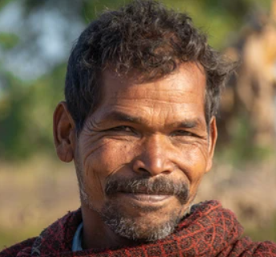

Aarav Gupta

TYCC (The Youth Can Change) is dedicated to supporting communities, particularly during challenging times such as the lockdown. We provided essential supplies like ration kits, cooked meals, medicines, and other critical support to people in need. Our vision is driven by compassion, empowerment, and the belief that youth can bring positive change.
Collaborations with local businesses to provide essential goods.
Engaging community leaders to amplify our reach and impact.
Partnerships with medical professionals for healthcare support.
We believe in empowering the youth and the community to stand together during difficult times. By extending our support through essentials and care, we aim to uplift and strengthen community bonds.
TYCC provided incredible support to our family during the lockdown. Their ration kits and medicines were lifesaving.
Volunteering with TYCC helped me realize how much youth can impact communities positively. Truly inspiring!
The dedication and compassion of TYCC volunteers made a huge difference in our neighborhood during tough times.
Join us in our mission to uplift communities by volunteering or contributing resources.